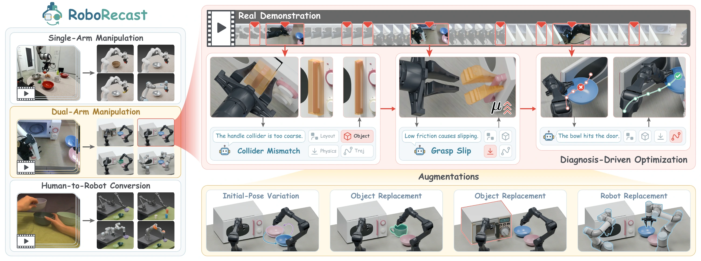
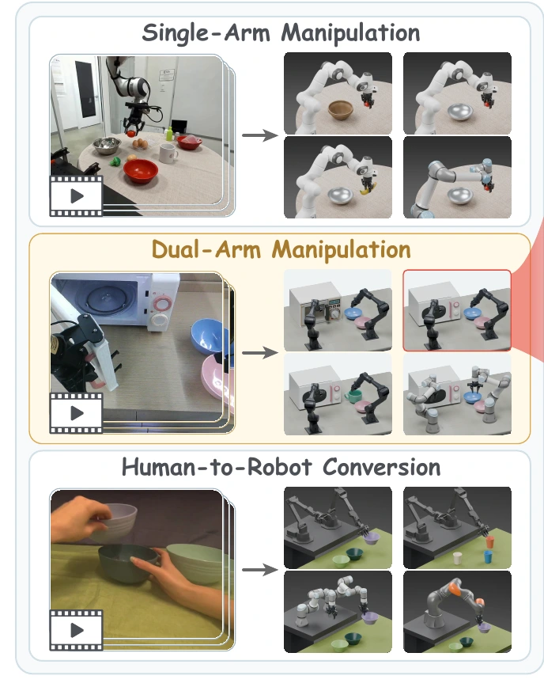
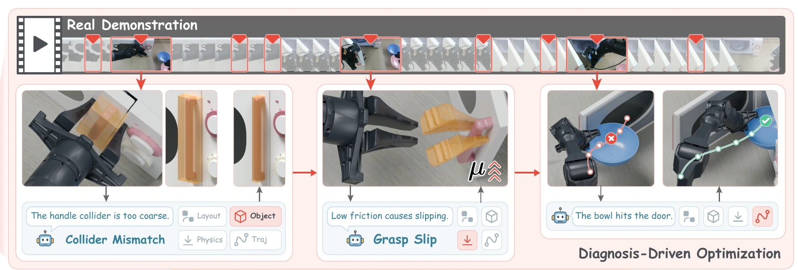
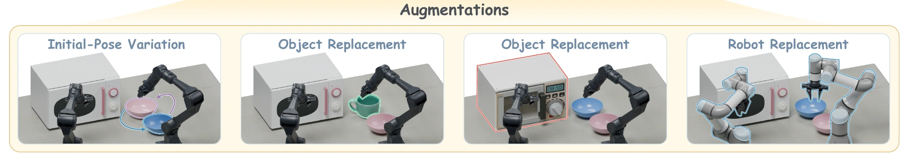
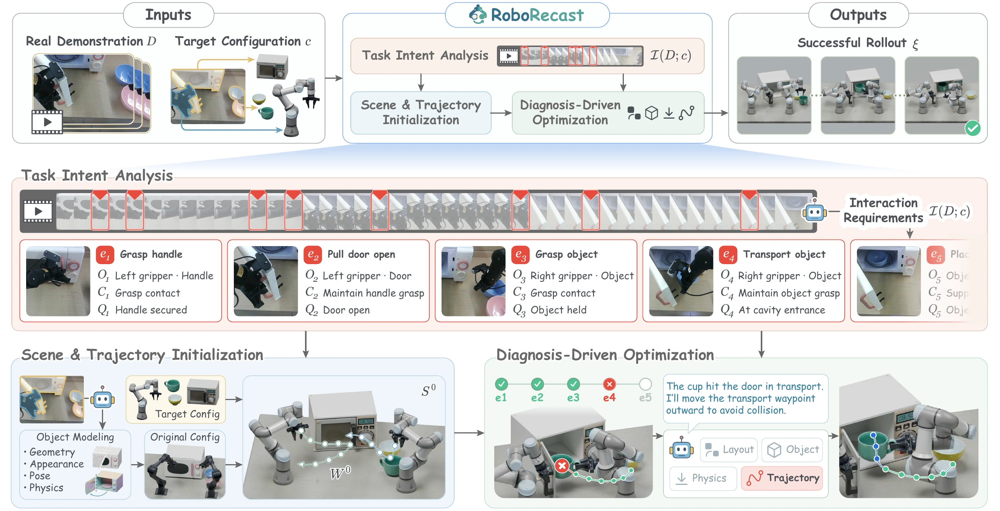

RoboRecast
Intent-Preserving Demonstration Augmentation
via Diagnosis-Driven Optimization
¹ Zhejiang University ² Shenzhen University ³ China Telecom
† Corresponding author




Demonstration Gallery
In-House Data
Put Cube into Bowl
Push Cube Across the Line
Open the Microwave
Stack Cubes
Put Cube into Bowl
Push Cube Across the Line
Open the Microwave
Stack on a Cube
Place in Bowl
Push Across the Line
Stack Cubes
Put Cube into Bowl
Push Cube Across the Line
Open the Microwave
Real-World Policy Rollouts
Real UR5 · 2× playback
Stack Cubes
Put a Cube into a Bowl
Push a Cube Across the Line
Open the Microwave
Real UR5 · 2× playback
Stack a Mouse on a Cube
Put a Joy-Con into a Bowl
Push a Mug Across the Line
Real Piper-X · 2× playback
Stack Cubes
Put a Cube into a Bowl
Push a Cube Across the Line
Additional Demonstrations
Place an Object in a Bowl
Articulated Objects
Open the Microwave
Open the Oven
Place a Screwdriver in the Drawer and Close It
Rotate the Faucet Spout
Open the Microwave and Place an Object Inside
Stack Bowls
Hold a Cup and Tilt a Bottle
Place a Toy in the Drawer
Put a Green Block in a Box
Push a Chair
Recycle a Can
Arrange Tableware Across Work Surfaces
Method Overview


RoboRecast infers task intent from a real demonstration by identifying the contacts and state changes each interaction requires, along with the order in which they must occur. It maps the roles in those interactions to the corresponding objects and robot in the target configuration. These requirements guide how the agent builds the simulated scene and places waypoints for the target robot.
The agent checks the scene and trajectory for validity, then runs the motion in simulation to verify each required interaction. When a check fails or an interaction is missed, visual and numerical feedback guide a targeted change to the scene or trajectory. In the example above, rendered views and contact logs show that the cup strikes the open microwave door. The agent moves a waypoint outward and reruns the affected motion to check that the cup clears the door without introducing a new violation.
Experimental Results
Policy Learning on the Real UR5
Across four tasks, adding 50 reconstructions and 50 layout augmentations to 50 real demonstrations raises average full-task success from 22.5% to 53.8%. With converted and augmented human demonstrations, it reaches 56.3%.
| Setting | Training data | Stack cubes | Place in bowl | Push cube | Open microwave | Average | |||||
|---|---|---|---|---|---|---|---|---|---|---|---|
| S | T | S | T | S | T | S | T | S | T | ||
| Real only | Real-50 | 30 | 15 | 30 | 20 | 60 | 45 | 10 | 10 | 32.5 | 22.5 |
| Real-to-sim reconstruction | Real-50 + RoboSnap-R2S-50 | 20 | 15 | 45 | 15 | 45 | 25 | — | — | 36.7 | 18.3 |
| Real-50 + AR2S-R2S-50 | 25 | 15 | 35 | 20 | 50 | 35 | — | — | 36.7 | 23.3 | |
| Real-50 + OurR2S-50 | 35 | 20 | 40 | 40 | 60 | 55 | 45 | 30 | 45.0 | 38.3 | |
| Layout augmentation | Real-50 + OurR2S-50 + MimicGen-50 | 45 | 20 | 45 | 35 | 65 | 50 | 50 | 30 | 51.3 | 33.8 |
| Real-50 + OurR2S-50 + CPGen-50 | 50 | 35 | 45 | 40 | 85 | 50 | 60 | 35 | 60.0 | 40.0 | |
| Real-50 + OurR2S-50 + OurAug-50 | 55 | 50 | 60 | 55 | 85 | 60 | 65 | 50 | 66.3 | 53.8 | |
| Human-to-robot conversion | Real-50 + Ego2Robot-50 | 40 | 20 | 40 | 35 | 60 | 50 | 30 | 25 | 42.5 | 32.5 |
| Real-50 + OurH2R-50 | 65 | 45 | 55 | 50 | 75 | 60 | 45 | 30 | 60.0 | 46.3 | |
| Real-50 + OurH2R-50 + OurH2RAug-50 | 65 | 55 | 70 | 60 | 80 | 70 | 60 | 40 | 68.8 | 56.3 | |
Adaptation to New Objects
A mouse, a Joy-Con, and a mug replace the cube in the stacking, placing, and pushing tasks. Average full-task success rises from 1.7% with the original data to 33.3% with 100 object augmentations.
| Training data | Stack | Place | Push | Average | ||||
|---|---|---|---|---|---|---|---|---|
| S | T | S | T | S | T | S | T | |
| Original-50 | 0 | 0 | 0 | 0 | 10 | 5 | 3.3 | 1.7 |
| ObjAug-50 | 30 | 15 | 20 | 15 | 40 | 35 | 30.0 | 21.7 |
| ObjAug-100 | 50 | 30 | 35 | 25 | 55 | 45 | 46.7 | 33.3 |
Transfer from UR5 to Piper-X
Policies trained on demonstrations generated for Piper-X are evaluated on the real robot. Increasing the training set from 50 to 100 generated demonstrations raises average full-task success from 12.5% to 22.5%.
| Training data | Stack | Place | Push | Open | Average | |||||
|---|---|---|---|---|---|---|---|---|---|---|
| S | T | S | T | S | T | S | T | S | T | |
| RobotAug-50 | 45 | 20 | 20 | 10 | 55 | 20 | 10 | 0 | 32.5 | 12.5 |
| RobotAug-100 | 60 | 40 | 20 | 15 | 50 | 30 | 10 | 5 | 35.0 | 22.5 |
Takeaways
- Problem Formulation. We formulate real-world demonstration augmentation as a joint optimization of the simulated scene and robot motion. The interaction requirements that define the task remain fixed, while the scene and motion can change to satisfy them in the target configuration.
- Agentic Optimization. We introduce RoboRecast, an agentic framework that infers interaction requirements from a source demonstration and uses simulation feedback to diagnose execution failures. Each diagnosis guides a targeted update to the scene or motion, which the agent then tests in simulation.
- Experimental Validation. Experiments on real-world single-arm and simulated bimanual tasks show that RoboRecast generates effective training data for robot policies. The data improves policy success when target demonstrations are available and supports transfer to new objects or robots when they are unavailable.
Demo Video
BibTeX
@misc{long2026roborecast,
title = {RoboRecast: Intent-Preserving Demonstration Augmentation via Diagnosis-Driven Optimization},
author = {Long, Yushi and Xu, Juzhan and Huang, Haibin and Zhang, Chi and
Chen, Yin and Peng, Sida and Hu, Ruizhen and Zhou, Xiaowei},
year = {2026}
}